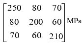

Mid term Examination -2022
Experimental Stress Analysis
(One A4 size formula sheet is allowed for reference)
Full Marks: 30
Section A, Fill up the blanks (6 x 1 = 6 Marks)
- Poisson’s ratio is _______________.
- On the principal plane ______________ is the magnitude of the shear stress.
- In a plane stress condition _________ is zero.
- In a rectangular rosette the gauges are arranged at ________, ________ and ________ degrees.
- ______________ electrical circuit is used to measure the strain by using strain gauges.
- Principal planes are always ______________.
Section B, Answer any three questions (3 x 8 = 24 Marks)
- A plane element in a boiler is subjected to tensile stresses of 400 MPa in x-x direction and 150 MPa in y-y direction. Each of the above stresses is accompanied by a shear stress of 100 MPa such that when associated with the 400 MPa tensile stress to rotate the element in anticlockwise direction. Find (i) the normal and shear stress on a plane inclined at an angle 30o with the x-x axis (ii) major and minor principal stresses and their planes (iii) Maximum shear stress.
- The stresses at a point on a steel plate found to be σₓₓ = 150 MPa (T), σᵧᵧ= 300 MPa (T), and ζₓᵧ = 250 MPa. Using E = 200 GPa and υ = 0.25, determine the strains εₓₓ, εᵧᵧ, γₓᵧ, εzz and the stress σzz assuming (i) the point is in a state of plane stress (ii) the point is in a state of plane strain.
- The strain readings as measured by a 45⁰ rosette at a point in a stresses body are given by εₐ = 350 μ m/m, εb = 425 μ m/m and εc = -275 μ m/m. Determine the principal strains, principal stresses, principal planes, maximum shear strain and maximum shear stress. Take E = 200 GPa, υ = 0.3
- The state of stress at a point is given by the following array of terms in MPa. Determine the principal stresses, principal planes and maximum shear stress.
